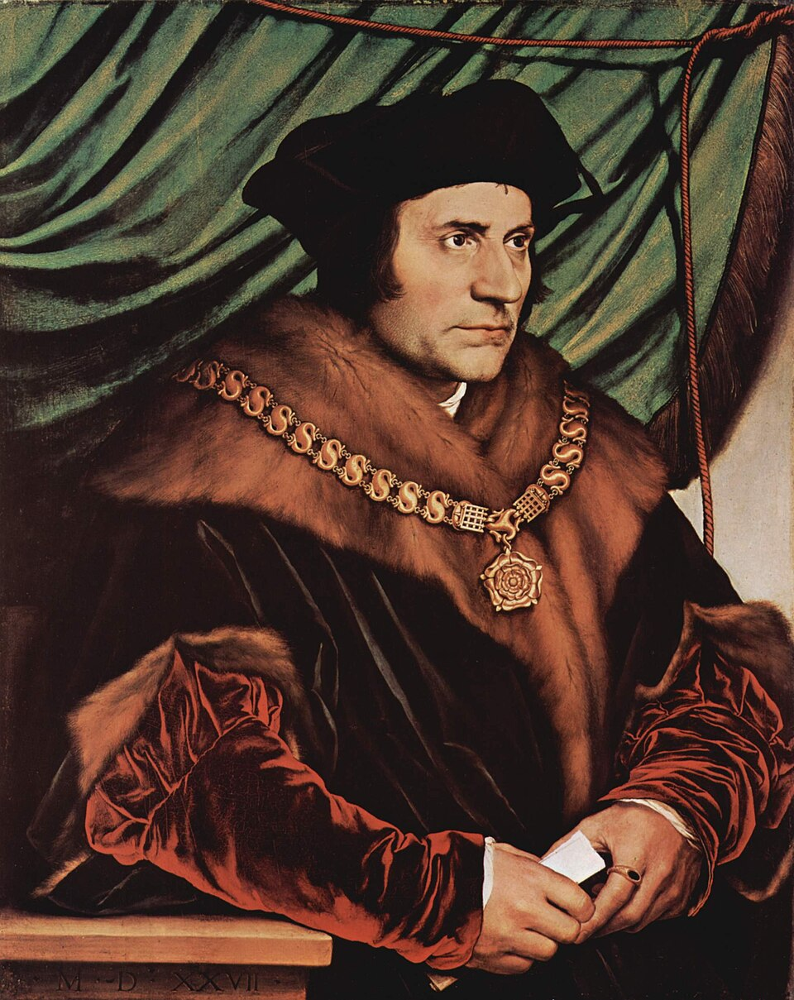

„Hoće li tko za mnom, neka se odreče samoga sebe, neka uzme svoj križ i neka ide za mnom.” (Mt 16,24)

Sir Thomas More bio je jedna od najistaknutijih ličnosti 16. stoljeća – vrhunski pravnik, humanist i engleski kancelar. Njegov uspon do samog vrha vlasti prekinut je sukobom s kraljem Henrikom VIII. oko pitanja crkvenog autoriteta. More se nepokolebljivo protivio kraljevoj namjeri da odvoji Englesku od Katoličke crkve i sebe proglasi vrhovnim poglavarom, smatrajući da duhovna vlast pripada isključivo papi. Zbog svoje šutnje i odbijanja prisege, izveden je pred sud pod optužbom za veleizdaju.
Iako se More na suđenju branio pravnim znanjem i šutnjom, osuđen je na temelju lažnog svjedočenja Thomasa Cromwella i njegovih plaćenika. Nakon godinu dana zatočeništva u zloglasnoj Londonskoj kuli (Tower of London), pogubljen je odrubljivanjem glave 6. lipnja 1535. godine. Njegove posljednje riječi: "Umirim kao kraljev dobar sluga, ali najprije Božji", postale su simbolom vrhunske moralne dosljednosti i prvenstva savjesti nad državnom silom.
Osim državničkog rada, More je ostavio neizbrisiv trag u svjetskoj književnosti i filozofiji svojim djelom "Utopija" (1516.). U njemu je opisao idealno društvo utemeljeno na zajedničkom vlasništvu, jednakosti muškaraca i žena te vjerskoj toleranciji (uz iznimku ateista). Inspiraciju je crpio iz života ranih kršćanskih zajednica i samostanskog uređenja, a sam pojam "utopija" ušao je u sve svjetske jezike kao sinonim za savršeno, ali nedostižno društvo.
Utjecaj "Utopije" osjetio se stoljećima kasnije, inspirirajući autore poput Jonathana Swifta, ali i rane socijalističke mislioce poput Karla Kautskog i Lenjina, koji su u Moreu vidjeli preteču borbe za društvenu pravdu. More je bio i duboko plodan vjerski pisac, braneći katolički nauk u polemikama s Martinom Lutherom, dok su njegovi kasni spisi o Kristovoj patnji, napisani u iščekivanju smrti, spašeni i sačuvani zahvaljujući njegovoj kćeri Margaret.
Papa Ivan Pavao II. proglasio ga je svetim 1935. godine, a 2000. godine papa Benedikt XVI. proglasio ga je zaštitnikom političara i vladara. Njegov život i djelo i danas su inspiracija svima koji se bore za pravednost, slobodu savjesti i dostojanstvo ljudskog života.